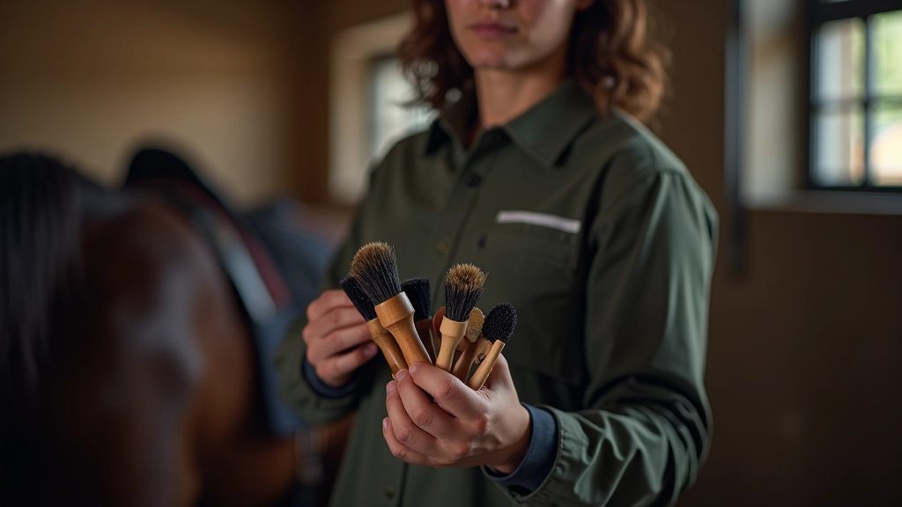
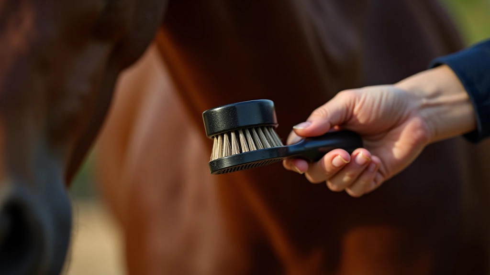
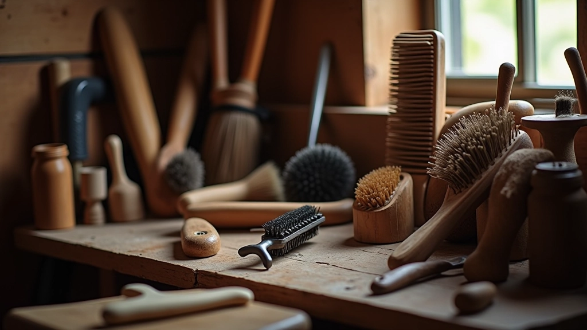
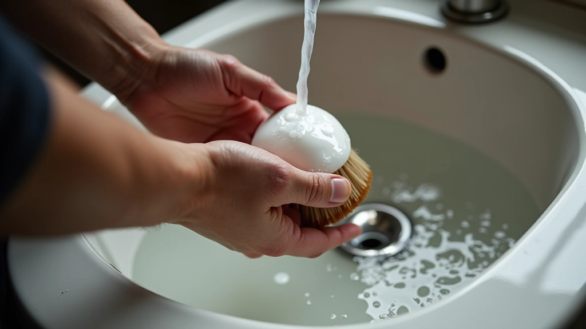

خطوات تنظيف الحصان بشكل صحيح
تعرف على الطريقة الصحيحة لتنظيف الحصان يومياً، من الفرشاة الأولى إلى العناية بال...
اكتشف أنواع الفرش والأدوات المهمة للعناية اليومية بالحصان وكيفية استخدام كل واحدة منها بشكل صحيح

الحصان يحتاج إلى عناية منتظمة وشاملة. لكن هنا الحقيقة — معظم الناس يبدأون بالأدوات الخاطئة ثم يشعرون بالإحباط. الفرشاة المناسبة تجعل الفرق كبيراً. ليس فقط في النتيجة النهائية، لكن في الوقت الذي تستغرقه والراحة التي يشعر بها الحصان.
كل أداة لها غرض محدد. بعضها لإزالة الأوساخ، وبعضها لتنعيم الفراء، وبعضها للعناية بالمناطق الحساسة. عندما تعرف أي أداة تستخدم ومتى — ستوفر الوقت والجهد بشكل كبير. بالإضافة إلى أن الحصان سيستمتع بالعملية أكثر بكثير.

هذه هي الأدوات التي تحتاجها حقاً. لا أكثر، لا أقل. كل واحدة لها دور محدد وتستحق مكاناً في صندوق العناية الخاص بك.
هذه الفرشاة لها شعيرات ناعمة وكثيفة. تستخدم لتنظيف الجسم بشكل عام وإزالة الأوساخ السطحية. تمرّرها بحركات دائرية لطيفة على كل الجسم. حوالي 5 دقائق كافية لتنظيف شامل.
أداة قوية لفك التشابك وإزالة الشعر الميت والأوساخ العالقة. خاصة مهم قبل وبعد التمرين. استخدمه بحذر حول الوجه والأرجل. المشط الجيد يستمر سنوات طويلة.
فرشاة بشعيرات مرنة وقصيرة. تستخدم بعد الاستحمام أو على جسم رطب قليلاً. تساعد في إزالة الماء والأوساخ المتبقية. تمنع الفراء من الجفاف السريع.
شعيرات ناعمة جداً لتلميع الفراء وجعله يلمع. تستخدم كخطوة أخيرة بعد التنظيف الأساسي. تعطي مظهراً احترافياً وسلساً. مهمة جداً قبل العروض أو الفعاليات.
فرشاة خاصة بشعيرات واسعة التباعد. تفك تشابك الذيل والرقبة دون كسر الشعر. تحتاج صبراً وحنان — لا تجذبها بقوة. استخدمها برفق لتحصل على أفضل النتائج.
أداة معدنية مهمة جداً. تنظف الوحل والأوساخ من باطن الحافر. استخدمها يومياً بعد التمرين. تساعد في اكتشاف أي مشاكل في الحافر مبكراً. لا تنسَها أبداً.
الأداة الصحيحة بالطريقة الخاطئة لن تعطيك نتائج جيدة. هنا بعض النصائح الأساسية التي ستغير طريقة عملك.
أول شيء — استخدم فرشاة صلبة قليلاً لإزالة الأوساخ الثقيلة والطين. حرّكها في اتجاه نمو الشعر. لا تضغط بقوة. اسمح للفرشاة تقوم بالعمل.
بعد الفرشاة الأولى، امسح الفراء بالمشط المعدني. هذا يزيل الشعر الميت والأوساخ العالقة. تحرك ببطء على المناطق التي بها تشابك. لا تقسِ على الحصان.
الخطوة الأخيرة — استخدم الفرشاة الناعمة جداً لتلميع الفراء. حركات طويلة وسلسة. هذا يعطي مظهراً احترافياً وسلساً. الحصان سيشعر بالفرق في الراحة أيضاً.


الفرش المتسخة تنشر البكتيريا وتقلل من فعاليتها. اغسلها بماء دافئ وصابون مرتين أسبوعياً على الأقل. اتركها تجف تماماً قبل الاستخدام التالي. أداة نظيفة = نتائج أفضل.
كل حصان مختلف. بعضها حساس من مناطق معينة. راقب الحصان — إذا حرّك أذنيه للخلف أو حاول الهروب، فهو يخبرك أن شيء ما غير مريح. عدّل الضغط أو جرّب أداة مختلفة.
هذه المناطق تتطلب عناية خاصة. الشعر هناك أطول وأكثر عرضة للتشابك. استخدم فرشاة مناسبة وكن صبوراً. سوء العناية بها يعطي مظهراً إهمالياً للحصان بأكمله.
خصص وقتاً كافياً للعناية. لا تسرع العملية. جلسة عناية جيدة تستغرق حوالي 30-45 دقيقة. هذا الوقت مهم ليس فقط للنتيجة، لكن أيضاً لبناء علاقة قوية بينك وبين الحصان.
الأدوات الجيدة تستحق عناية جيدة. إذا عاملتها بحذر، ستستمر معك لسنوات. إليك كيفية الحفاظ عليها:

الأدوات المناسبة تجعل العناية بالحصان أسهل وأكثر فعالية. لا تحتاج إلى عدد كبير من الأدوات — فقط الأساسيات التي تعملين بشكل جيد. كل فرشاة ومشط لها غرض محدد، وعندما تستخدمينها بشكل صحيح، ستشاهدين الفرق الحقيقي.
المهم أيضاً أن تستمعي لرد فعل الحصان وتأخذي وقتك. الحصان سيقدّر العناية والاهتمام. مع الممارسة، ستصبح عملية العناية روتيناً سهلاً وممتعاً لكما معاً. ابدأي بالأدوات الأساسية، واستثمري في الجودة، واستمري في التعلم.
المعلومات المقدمة في هذا المقال هي لأغراض تعليمية وإعلامية عامة فقط. كل حصان مختلف وله احتياجاته الخاصة. إذا كان لديك أي مخاوف صحية بشأن حصانك، يُرجى استشارة الطبيب البيطري المختص. الالتزام بممارسات السلامة والعناية الصحيحة ضروري دائماً عند التعامل مع الخيل.

فريق التحرير والمحتوى
كتبه فريق الإسطبل الذهبي التحريري، متخصص في تقديم إرشادات عملية وسهلة المتابعة حول رعاية الخيول.
تعرف على الطريقة الصحيحة لتنظيف الحصان يومياً، من الفرشاة الأولى إلى العناية بال...

اتعلم كيفية وضع السرج بطريقة آمنة وصحيحة على ظهر الحصان لضمان راحته وسلامة الفار...

فهم احتياجات الحصان الغذائية ومعرفة أفضل الأعلاف والمكملات التي تحافظ على صحته و...